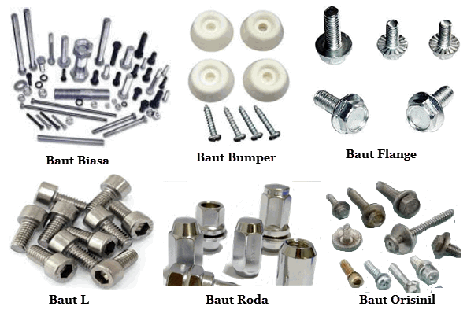

A. Fastener
Fastener merupakan komponen mekanik yang digunakan untuk mengikat atau menyambungkan dua atau lebih bagian menjadi satu kesatuan yang utuh. Dalam dunia teknik, fastener sangat penting karena memungkinkan suatu sistem atau struktur dapat dirakit dengan kuat namun tetap fleksibel untuk dibongkar kembali jika diperlukan.
Secara umum, fastener dibagi menjadi dua kategori, yaitu yang bersifat non-permanen seperti baut dan mur yang dapat dilepas tanpa merusak komponen, serta yang bersifat permanen atau semi-permanen seperti paku keling yang biasanya akan merusak sambungan saat dilepas. Berbeda dengan metode penyambungan lain seperti pengelasan atau perekat, fastener bekerja secara mekanis melalui gaya penjepit dan gesekan antar komponen.
“Education is not the filling of a pail, but the lighting of a fire.” — adapted from W.B. Yeats
1. Fungsi Fastener
Adapun fungsi fastener dalam sistem teknik dapat dijelaskan sebagai berikut:
- Mengikat atau Menyambungkan Komponen
Digunakan untuk menggabungkan dua atau lebih bagian agar menjadi satu kesatuan yang kokoh.
- Menahan Beban
Mampu menahan berbagai jenis gaya seperti gaya tarik, gaya geser, dan getaran selama sistem beroperasi.
- Memudahkan Proses Pembongkaran dan Perakitan
Memungkinkan komponen dilepas dan dipasang kembali untuk keperluan perawatan, perbaikan, atau modifikasi.
- Menjaga Posisi dan Kestabilan
Menjamin setiap komponen tetap berada pada posisi yang tepat dan tidak bergeser saat digunakan.
- Mendistribusikan Beban
Membantu menyebarkan gaya secara merata pada area sambungan sehingga mengurangi risiko kerusakan akibat konsentrasi tegangan.
2. Jenis-jenis Fastener
A. Baut

Bolt (baut) merupakan fastener berulir eksternal yang umumnya digunakan bersama nut (mur) untuk mengikat dua atau lebih komponen. Baut bekerja dengan menghasilkan gaya jepit (clamping force) saat dikencangkan, sehingga komponen yang disambungkan dapat terikat dengan kuat dan stabil. Dalam penggunaannya, bolt sangat efektif untuk menahan beban besar, baik berupa gaya tarik maupun geser, sehingga banyak diaplikasikan pada konstruksi, permesinan, dan struktur logam. Selain itu, baut juga memungkinkan proses pembongkaran dan pemasangan kembali tanpa merusak komponen, sehingga sangat cocok untuk sistem yang membutuhkan perawatan atau penggantian secara berkala. Dengan karakteristik tersebut, bolt menjadi salah satu fastener paling penting dalam dunia teknik.
B. Sekrup
Screw (sekrup) adalah fastener berulir yang dirancang untuk dapat digunakan tanpa mur, karena mampu langsung menembus atau membentuk ulir pada material yang disambungkan. Sekrup biasanya digunakan pada material seperti kayu, plastik, atau logam tipis, sehingga sangat umum ditemukan dalam perakitan furnitur, elektronik, dan konstruksi ringan. Fungsi utama screw adalah untuk memberikan sambungan yang cukup kuat dengan proses pemasangan yang cepat dan praktis. Selain itu, sekrup juga memberikan fleksibilitas karena dapat dilepas dan dipasang kembali dengan mudah. Dalam beberapa jenis tertentu, seperti self-tapping screw, sekrup bahkan mampu membuat ulir sendiri saat dipasang, sehingga semakin mempermudah proses instalasi.
C. Mur
Nut (mur) merupakan fastener berulir internal yang digunakan bersama bolt untuk membentuk sambungan yang kuat dan stabil. Mur berfungsi sebagai pengunci yang bekerja dengan cara menjepit komponen di antara kepala baut dan mur itu sendiri, sehingga menghasilkan gaya jepit yang mampu menahan beban. Dalam aplikasinya, nut tidak hanya berperan sebagai pelengkap baut, tetapi juga sebagai elemen penting yang memastikan sambungan tidak mudah lepas akibat getaran atau beban dinamis. Terdapat berbagai jenis mur, seperti lock nut yang dirancang khusus untuk mencegah pengendoran. Dengan peran tersebut, nut menjadi komponen krusial dalam hampir semua sistem mekanik yang menggunakan baut sebagai pengikat utama.
D. Ring
Washer (ring) adalah komponen berbentuk cincin yang digunakan bersama bolt dan nut untuk meningkatkan kualitas sambungan. Fungsi utama washer adalah mendistribusikan beban dari baut atau mur ke permukaan yang lebih luas, sehingga mengurangi tekanan berlebih pada satu titik yang dapat menyebabkan kerusakan material. Selain itu, washer juga berfungsi melindungi permukaan komponen dari goresan atau deformasi akibat proses pengencangan. Pada jenis tertentu, seperti lock washer, komponen ini juga mampu mencegah sambungan menjadi kendor akibat getaran.
E. Rivet (Paku Keling)
Rivet atau paku keling merupakan fastener permanen yang digunakan untuk menyambungkan dua atau lebih komponen melalui proses deformasi plastis. Pada saat pemasangan, bagian ujung rivet akan dibentuk atau ditekan sehingga menghasilkan sambungan yang tidak dapat dilepas tanpa merusaknya. Fungsi utama rivet adalah menciptakan sambungan yang kuat dan tahan terhadap getaran, sehingga sangat cocok digunakan pada struktur seperti pesawat, jembatan, dan konstruksi logam. Selain itu, rivet juga efektif untuk material tipis yang sulit disambungkan dengan metode lain seperti pengelasan.
F. Stud (Baut Tanam)
Stud atau baut tanam adalah fastener berbentuk batang berulir tanpa kepala yang biasanya dipasang secara permanen pada salah satu komponen, dan digunakan bersama mur pada sisi lainnya. Stud banyak digunakan pada sistem permesinan, seperti pada blok mesin atau flange, karena mampu memberikan sambungan yang lebih stabil dan presisi. Fungsi utamanya adalah untuk memungkinkan proses bongkar-pasang yang berulang tanpa merusak ulir pada komponen utama. Selain itu, stud juga membantu mendistribusikan beban secara lebih merata dibandingkan baut biasa, sehingga mengurangi risiko kegagalan sambungan akibat konsentrasi tegangan.
G. Anchor
Anchor (angkur) merupakan jenis fastener khusus yang digunakan untuk mengikat atau menanamkan komponen pada material keras seperti beton, dinding, atau batu. Berbeda dengan fastener biasa, anchor bekerja dengan menciptakan penguncian di dalam material dasar melalui mekanisme ekspansi atau perekat kimia. Dalam aplikasinya, anchor berfungsi untuk menahan beban berat, seperti pemasangan struktur, mesin, atau peralatan industri pada lantai maupun dinding beton. Selain itu, anchor juga memberikan kekuatan tambahan pada sambungan dengan mendistribusikan gaya ke dalam material dasar, sehingga sambungan menjadi lebih kokoh dan stabil. Karena kemampuannya tersebut, anchor sangat penting dalam aplikasi yang membutuhkan keamanan tinggi dan ketahanan terhadap beban besar maupun getaran.
B. Joint
Joint adalah sambungan antara dua atau lebih komponen dalam suatu sistem teknik yang dirancang agar komponen tersebut dapat bekerja sebagai satu kesatuan. Dalam dunia teknik, joint bukan cuma sekadar “menyambungkan”, tapi juga memastikan bahwa sambungan tersebut mampu menahan beban, menjaga kestabilan, dan mempertahankan fungsi dari sistem secara keseluruhan.
Joint bisa dibuat dengan berbagai metode, seperti:
- Menggunakan fastener (baut, mur, rivet),
- pengelasan (welding),
- perekat (adhesive),
- atau kombinasi dari beberapa metode tersebut.
Setiap jenis joint punya karakteristik berbeda tergantung kebutuhan kekuatan, fleksibilitas, dan
kondisi kerja.
“Education is not the filling of a pail, but the lighting of a fire.” — adapted from W.B. Yeats
1. Fungsi Joint
Dalam sistem teknik, joint punya beberapa fungsi penting yaitu:
- Menyatukan Komponen
Joint berfungsi sebagai penghubung utama yang menyatukan dua atau lebih bagian menjadi satu sistem yang utuh. Tanpa joint, komponen hanya akan berdiri sendiri dan tidak bisa bekerja sebagai satu kesatuan. Sambungan ini memungkinkan terbentuknya struktur atau mesin yang kompleks dari bagian-bagian yang lebih kecil.
- Menyalurkan dan Menahan Beban
Joint berperan dalam mentransfer beban dari satu komponen ke komponen lainnya. Beban ini bisa berupa gaya tarik, tekan, geser, maupun momen. Oleh karena itu, joint harus dirancang agar mampu menahan gaya tersebut tanpa mengalami kegagalan seperti patah, retak, atau lepas.
- Menjaga Kestabilan Struktur
Joint memastikan bahwa komponen tetap berada pada posisi yang benar selama sistem beroperasi. Dengan adanya joint yang baik, struktur menjadi lebih stabil dan tidak mudah bergeser, terutama saat menerima beban dinamis atau getaran.
- Memungkinkan Perakitan dan Pembongkaran
Pada jenis joint tertentu, seperti yang menggunakan fastener, sambungan dapat dibongkar dan dipasang kembali. Hal ini sangat penting untuk proses maintenance, perbaikan, atau modifikasi sistem tanpa harus merusak komponen utama.
1. Jenis-jenis Joint
A. Butt Joint
Butt joint adalah jenis sambungan di mana dua komponen disusun sejajar dan disambungkan pada ujungnya dalam satu garis lurus. Joint ini sering digunakan pada proses pengelasan karena menghasilkan sambungan yang rapi dan lurus, terutama pada pipa atau pelat logam. Fungsi utama butt joint adalah untuk menyatukan dua bagian menjadi satu kesatuan tanpa menambah ketebalan signifikan pada area sambungan, sehingga sangat efisien untuk struktur yang membutuhkan keseragaman bentuk. Selain itu, joint ini mampu menahan beban tarik dengan baik jika proses penyambungannya dilakukan secara optimal.
B. Lap Joint
Lap joint merupakan sambungan di mana dua komponen saling bertumpuk (overlap) dan kemudian diikat menggunakan fastener atau dilas. Joint ini sering digunakan pada konstruksi pelat logam karena proses pembuatannya relatif mudah dan tidak memerlukan presisi tinggi seperti butt joint. Fungsi utama lap joint adalah untuk memberikan sambungan yang kuat dalam menahan gaya geser, sehingga cocok digunakan pada struktur yang menerima beban lateral. Selain itu, desainnya juga memberikan area kontak yang lebih luas sehingga distribusi beban menjadi lebih merata.